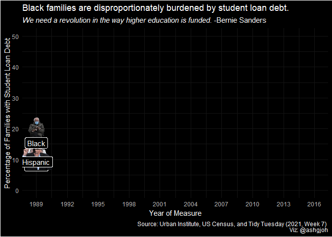

library(tidyverse)
library(tidytuesdayR)
library(ggbernie)
library(gganimate)
library(ggthemes)
library(ggdark)Hosted by the Emory Data Visualization and Analysis Committee for the Graduate Division of Biological and Biomedical Scienes, the ggBernie competition was a data visualization challenge to create a compelling plot using the R packages ggplot and ggBernie. Below is the code for my winning submission:
Getting the data
I will be using data from the Urban Institute and the US Census curated by the Tidy Tuesday project
This dataset includes data regarding racial wealth inequality in the United States. within this dataset is data on average family student loan debt for aged 25-55, by race and year (normalized to 2016 dollars). I know a major part of Bernie’s platform is eliminating the cost of higher education so I figured that this dataset is particularly fitting for this challenge.
Below I am using the tidytuesdayR package to download the relevant data.
wealthinequality <- tidytuesdayR::tt_load(2021, week = 7)
Downloading file 1 of 11: `home_owner.csv`
Downloading file 2 of 11: `income_aggregate.csv`
Downloading file 3 of 11: `income_distribution.csv`
Downloading file 4 of 11: `income_limits.csv`
Downloading file 5 of 11: `income_mean.csv`
Downloading file 6 of 11: `income_time.csv`
Downloading file 7 of 11: `lifetime_earn.csv`
Downloading file 8 of 11: `lifetime_wealth.csv`
Downloading file 9 of 11: `race_wealth.csv`
Downloading file 10 of 11: `retirement.csv`
Downloading file 11 of 11: `student_debt.csv`student_debt <- wealthinequality$student_debt %>%
mutate(race = factor(race,
levels = c("White",
"Hispanic",
"Black")))Making the graph
plot <- ggplot(student_debt,
aes(x = year,
y = loan_debt_pct * 100)) +
geom_line(data = student_debt %>%
filter(race == "White"),
aes(x = year,
y = loan_debt_pct * 100),
color = "yellow",
size = 1.5) +
geom_bernie(data = student_debt %>%
filter(race == "White"),
aes(x = year,
y = loan_debt_pct * 100),
bernie = "head") +
geom_label(data = student_debt %>%
filter(race == "White"),
aes(x = year,
y = loan_debt_pct * 100,
label = race),
nudge_y = -2.5) +
geom_line(data = student_debt %>%
filter(race == "Hispanic"),
aes(x = year,
y = loan_debt_pct * 100),
color = "cyan",
size = 1.5) +
geom_bernie(data = student_debt %>%
filter(race == "Hispanic"),
aes(x = year,
y = loan_debt_pct * 100),
bernie = "stand") +
geom_label(data = student_debt %>%
filter(race == "Hispanic"),
aes(x = year,
y = loan_debt_pct * 100,
label = race),
nudge_y = -3.5) +
geom_line(data = student_debt %>%
filter(race == "Black"),
aes(x = year,
y = loan_debt_pct * 100),
color = "limegreen",
size = 1.5) +
geom_bernie(data = student_debt %>%
filter(race == "Black"),
aes(x = year,
y = loan_debt_pct * 100),
bernie = "sitting") +
geom_label(data = student_debt %>%
filter(race == "Black"),
aes(x = year,
y = loan_debt_pct * 100,
label = race),
nudge_y = -2.5) +
scale_x_continuous(limits = c(1989, 2016),
breaks = seq(1989, 2016, by = 3)) +
scale_y_continuous(limits = c(0, 50)) +
labs(title = "Black families are disproportionately burdened by student loan debt.",
subtitle = expression(paste(italic("We need a revolution in the way higher education is funded."),
" -Bernie Sanders")),
x = "Year of Measure",
y = "Percentage of Families with Student Loan Debt",
caption = "Source: Urban Institute, US Census, and Tidy Tuesday (2021, Week 7) \n Viz: @ashgjoh") +
dark_theme_minimal() +
transition_reveal(along = year, keep_last = FALSE)Inverted geom defaults of fill and color/colour.
To change them back, use invert_geom_defaults().After all of this code, we can actually see the animated plot with the following code:
animate(plot)
Interpretation
Beginning in the late 1990s, the share of Black families with student loan debt began to rise at a faster rate relative to White and Hispanic families. Further analysis should be used to determine whether this increase in student debt coincides with tuition increase. Additionally, further analysis should be used to determine how this increase in student debt correlates with college attendance rates.